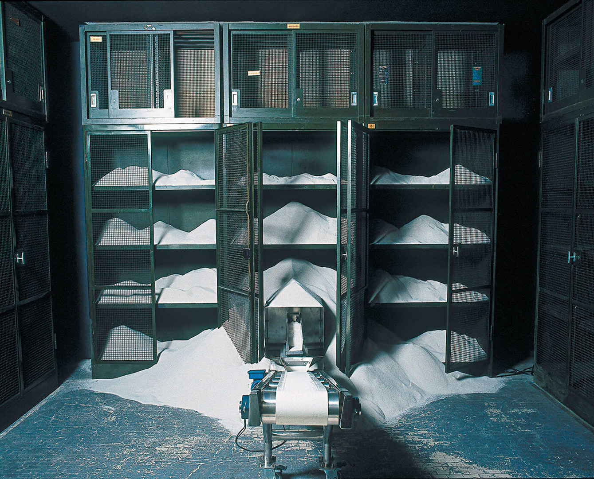
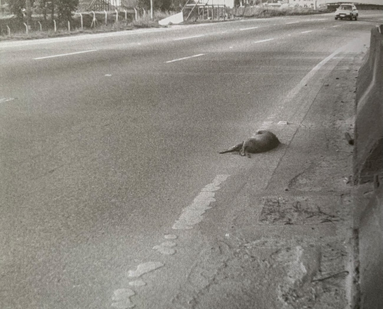
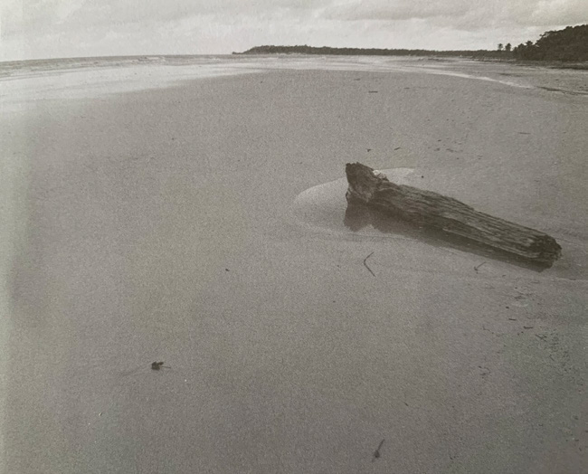

Abstract: Out of its European Renaissance origins in the writings of Dante and Camões, the metaphor of the machina mundi first came to the fore in Brazilian literature in the canonical poem by Carlos Drummond de Andrade: the quintessential work of Brazilian modernism in its broadest sense, «A Máquina do Mundo». The aim of this article is to explore the multiple, shifting possibilities inherent in the complex literary-cultural motif of the «machine of the world» in current Brazilian art and literature. The text begins by looking at the comic epic poem Por mares nunca dantes by Geraldo Carneiro, before focusing on the different creative practices and appropriations of a series of paradigmatic variations on the theme from the opening decades of the 21st century: hybridity and interdisciplinarity in the poems A máquina do mundo repensada by Haroldo de Campos and «A quarta parede» by Marco Lucchesi; and interartistic intersectionality and creative duality in Laura Vinci’s verbal-visual sculptural installation «A máquina do mundo», and Nuno Ramos’s photo-illustrated poetry collection Junco. The aim of this exploration is to interpret each of the works within the discursive historical-cultural context of the motif, and to analyse critically its presence in these rewritten and reconceptualised forms.
Keywords: Machine of the world, interdisciplinary and interartistic practices, contemporary world views, Brazil.
Claros enigmas y oscuros sentidos: el perpetuum mobile de la «Máquina del Mundo» en las recientes prácticas interartísticas brasileñas
Resumen: Partiendo de sus orígenes renacentistas europeos en los escritos de Dante y Camões, la metáfora de la machina mundi apareció por primera vez en la literatura brasileña en el poema canónico de Carlos Drummond de Andrade: la obra cumbre del modernismo brasileño en su sentido más amplio, «A Máquina do Mundo». El objetivo de este artículo es explorar las múltiples y cambiantes posibilidades inherentes al complejo motivo literario-cultural de la «máquina del mundo» en el arte y la literatura brasileños actuales. El texto comienza analizando el poema épico cómico Por mares nunca dantes, de Geraldo Carneiro, antes de centrarse en las diferentes prácticas creativas y apropiaciones de una serie de variaciones paradigmáticas sobre el tema en las primeras décadas del siglo XXI: hibridez e interdisciplinariedad en los poemas A máquina do mundo repensada de Haroldo de Campos y «A quarta parede» de Marco Lucchesi; e interseccionalidad interartística y dualidad creativa en la instalación escultórica verbal-visual «A máquina do mundo», de Laura Vinci, y en el poemario foto ilustrado Junco, de Nuno Ramos. El objetivo de esta investigación es interpretar las obras en el contexto histórico-cultural discursivo del motivo, y analizar críticamente su presencia en estas formas reescritas y reconceptualizadas.
Palabras clave: Máquina del Mundo, prácticas interdisciplinares e interartísticas, cosmovisiones contemporáneas, Brasil.
Cómo citar: Martínez-Teixeiro, A. (2025). Clear enigmas and hidden meanings: the perpetuum mobile of the «machine of the world» motif in recent interartistic activity in Brazil. Arte, Individuo y Sociedad, 37(1) 181-192. https://dx.doi.org/10.5209/aris.97600
1. Introduction
Love, love, love — the glowing hearth
that explains the world with an orgasm2.
The motif of the «machine of the world» has been realised down
through the centuries in a vast array of contexts, with different
meanings and characteristics, not least of all in the art and literature
of contemporary Brazil. Indeed, much like the musical moto
perpetuo or science’s eternal search for truth, the limits of the
concept seem endless.
Like classical literature, the image can be defined as a
perpetuum mobile in a constant process of growth. Yet it also
contains a sphinx-like quality due to its progressive incorporation of
ambiguous meanings and illuminating riddles in its transitions over
time and space and the ad hoc redefinitions of transformative
appropriation. In fact, in terms of the world view it represents for
each creator, the world machine in motion uses the external energy of
its basis in the sociohistorical reality that influences and
reformulates it, in addition to its own cumulative intrinsic symbolic
potential.
Its recurrence in the culture and literature of Brazil, therefore, is
not surprising, given the contemporary, modern nature of the country’s
artistic production, one of the defining characteristics of which is the
happy paradox of possessing a strong tradition of both anti-tradition
and judiciously anthropophagic devouring of the other.
The interdisciplinary and interartistic approach used to examine the
presence and reinterpretation of the world machine image in the examples
of hybrid art practice proposed in this article is very much in keeping,
in the first case, with established critical-theoretical practice in
this area, and in the second, with new emerging methodologies for
studying the expansion of literature into art, and vice versa. In fact,
the exploration of interartistic creation raises numerous additional
challenges owing to the othering and estrangement wrought by new
materialities and meanings. This new reality requires a new approach:
one of reciprocal, transitive metamorphosis, in which each component or
reality is transformed, to a great or lesser degree, in a process of
encounter with the other (Halpern, 2020).
For reasons of space and convenience, out of the vast seas and oceans
of interartistic creative production in Brazil, the study navigates only
within the realms of the literary and visual, and avoids the wider
channels of outworn traditional theory and criticism. To understand
the full complexity of interartistic practice today, the established
approaches no longer hold. Mimesis, misguided ut pictura
poesis, dialogics, and theories of addition or correspondence all
cease to apply in the changing disciplinary landscape of expanded and
diluted borders.
Furthermore, the study takes into account the communal perspective
and consensual contribution of the internal and external contexts of the
artworks examined, as well as their dialogue with and revival of past
tradition. In the insightful words of Lygia Clark in 1975, these are
works which «bridge the fissure of this separation» (1984, 33), whose
analysis offers us the «poor knowledge of their interpretation»3 (1984, 17).
To give some examples of how this intricate interplay between time
frames, texts and art forms is manifested in contemporary Brazilian art
and literature, let us consider first the constant, repeated,
differential recreation of Amazonian art and mythology, as witnessed
(and, indeed, originated) by the canonical anthropophagic poetry
collection Cobra Norato by Raul Bopp (1931). The same current
is also reflected in two exhibitions held by Maria Martins in New York
in the 1940s: in the first instance, in the correspondences between her
sculptural representation of the Amazonian deities and her act of
«anthropophagic» recreation in rewriting in English the myths and
legends portrayed; and in the second, in the transitive echoes between
the tortured «confession-frenzy» of a four-part erotic poem entitled
Explication (in French) and the insuperably ekphrastic series
of etchings created ad hoc for the homonymously named
exhibition catalogue (Martínez Pereiro 2020).
The second example is the transcultural appropriation of traditional
Japanese Noh theatre: the translator and founder of the Brazilian
concrete poetry movement Haroldo de Campos’s heterodox «transcreation»
of Hagoromo (The Feather Mantle), one of the most popular works
of Noh, attributed to the 15th-century playwright Zeami
Motokiyo; the literary-performative association invoked by Campos and
Hélio Oiticica between the feather mantle and Oiticica’s famous
parangolé capes; and experimental writing and painting by Nuno
Ramos, inspired, once again, by the Noh play (Martínez Teixeiro
2020).
The third and final example refers to the practices of contemporary
art creators in Brazil from the 1950s onwards based on the
«tropicalisation» of the legacy of Giorgio Morandi (his «metaphysics of
the mundane», and his exceptional and distinctive cultivation of the
still life form) and their oblique influence «on the outskirts of the
cloistered space of representation»4 (Morales Elipe, 2016, p.
13) on artists such as Ferreira Gullar (Martínez Teixeiro 2018) and
Iberê Camargo (Martínez Teixeiro and Martínez Pereiro 2022).
2. From
Renaissance transhumanisation to modern dysphoria
In the western world, the image of the «machine of the world» was
first established as a symbol of the journey through this world and
another (and through writing itself) in pursuit of learning and
perfection by Dante’s Commedia (first raised to «divinity» by
Giovanni Boccaccio in 1362 and known as such to audiences from the
16th century onwards) and by Canto X of The Lusiads
by Luís de Camões.
From the Renaissance perspective of the latter, the contemplation of
the mathematical physical (Platonic) and metaphysical (scholastic)
realities of the machine offer the privilege and recompense of seeing
and knowing: the symbolic euphoria of «Supreme Wisdom» (X, 76, ll. 2-3)
to behold with fleshly eyes what things the future hath the power «to
save from Mortals’ petty pride and science vain»5 (X,
76, ll. 3-4), thus marking the culmination of Vasco da Gama’s heroic
rise — and with him the Portuguese people and all of weak humankind —
from «earthly worm» to all-powerful «demigod». Dante encapsulates this
same process with connotative precision in «Paradiso» by creating the
verb trasumanar, «to transhumanise» (I, v. 70), by which he ex-
presses human beings’ transformation beyond the human, while at the same
time acknowledging his inability to explain it even paraphrastically
with existing words.
Under the light of transcendence, the symbolic content of the world
machine in Dante’s scholastic metaphysical context is intimated in
Commedia in the interpretative caveats expressed to readers,
firstly in «Inferno»: «O ye in whom intelligence is sound, / heed
carefully the teaching, which lies hidden / beneath the veil of my
mysterious lines»6 (IX, ll. 61-63); and again in
«Purgatorio»: «Reader, focus your eyes here on truth, / for the veil is
now so thin, / that surely to pass within is easy»7
(VIII, ll. 19-21). As in Camões, therefore, the machine of the world is
constructed as a super-celestial plane, upon which the human soul
discovers, in the words of João Adolfo Hansen, «during and after the
physical journey that is the ascetic’s path to anamnesis, the
purification of a reminiscence of the fundamental essence that, when
seen by the physical eye and contemplated by the intellectual eye of
judgement, becomes the ecstatic, wordless vision of God»8
(2018, p. 309).
Unsurprisingly, the revival in the 20th century of such a
culturally and symbolically specific motif, either literally or
approximately, proved problematic at best and inane at worst. As Georges
Bataille denounced in his 1930 criticism of the excessive formalism of
«purified» French art, the derivative, localised «game of transpo-
sitions» stripped language of its primordial symbolism. Yet formalist
excesses were a trap that the playfully pessimistic and perceptively
Pyrrhonian Carlos Drummond de Andrade could never, would never and did
never fall into. Beyond its mechanistic world view and religious belief
system, the topos of the world machine in its ancient sense presupposed
an explanation of everything: of the complex, ambiguous relationship be-
tween the binaries of heaven and earth, universe and cosmos, culture and
nature, poetry and science, knowledge and magic. Drummond, therefore,
might be seen as a «luddite» of sorts, standing against the faith and
certainties of symbolic mechanisation: against change for change’s sake,
against blind belief and sweeping tides of opinion, against totalising
explanations, and against the destruction of natural omniscience of the
world by technical-scientific progress.
It is generally accepted that Drummond’s «A Máquina do Mundo»,
published in its definitive version in the collection Claro
Enigma (1951), is the work that distorted and resignified the
symbolic value of the machina mundi for the generations of
Brazilian artists and writers that came after him.
The poem was first published on 2 October 1949 in the Rio de Janeiro
daily Correio da Manhã. The final version, published two years
later, introduces a number of small but significant Horatian changes of
style and expression, all of which serve to reinforce the new thematic
elements which Drummond incorporates into the reflections of his
«disillusioned self» on the «rocky road to Minas»: his sceptical refusal
of «a reality that transcends» (l. 19), of «that total explanation of
life»9 (l. 43), or of the knowledge of what
he has lost, when he chooses to «weigh» rather than to know10 (l. 95); and, in lines 55-60, as he
shifts from the continuity of «to» to internalising «in»11,
his inclusion of animal, plant and, in particular, mineral life,
substituting in this last instance the objective, external observation
«of the rough substance of the ores» for a subjective, personified image
of immersion «into the spiteful sleep of the ores»12
(l. 58):
and everything that defines earthly being,
including the animals
and the plants, and is imbibed
into the spiteful sleep of the ores,
goes round the world and is engulfed again
in the strange geometrical order of everything
and the original absurdity and its riddles,
its truths standing higher than so many
monuments to truth;
and the memory of the gods, and the solemn
sense of death, which blooms
on the stem of the most glorious existence13
The poem ends epiphonemically with the lines:
Pitch blackness had settled
on the rocky road to Minas,
and the machine of the world, repelled,
reformed piece by piece,
while I, weighing what I had lost,
continued slowly, hands slack by my side.14
Drummond thus situates us between «resignation» and «loss», just as
Jorge Luis Borges would a decade later in El hacedor (1960),
when he concludes in the closing lines of «Inferno, I, 32» that
«the machine of the world is too complex for the simplicity of man» (or
beast) and only «a dark resignation, a valiant ignorance» remains of
what «could not be regained». 15 (2005, p. 807): the
infinite thing that had been received and lost in the inevitable
transition from vertical celestial transhumanisation to the terrestrial
horizontal transhumanisation of modern life in extenso.
3.
Hybridising variations on the topos of the machine
In disavowal of such «dark resignation», Brazilian artists and
authors, particularly in the 21st century, have repeatedly
sought by an array of expressive forms and practices to recover and
reconstitute the layers of meaning within and around the machine,
ourselves and the troubled world in which we live. Their endeavour
follows Samuel Beckett’s (1983, p. 7) «Try again. Fail again. Fail
better» principle, in diametric counterpoint to the errors of
humanism, which, in the view of Philippe Sollers (1965, p. 13),
«immobilised» Dante’s Commedia and reduced it to «a cultural
reference» and an eternal state of «torpor»16.
The first uninhibited reimagining of the metaphor was the seriocomic
epic Por mares nunca dantes (2000) by Geraldo Carneiro. The
poem depicts Camões on a voyage around the Cape of Storms making land,
«by whim of the world machine» (2000, p. 183) and «some strange
stratagem of the stars» (2000, p. 184), in modern-day Rio de Janeiro.
The whole delirious tale of «chaos engineering»17
(2000, p. 183) is based on a biographical mistake by Voltaire
regarding Camões in the first French edition of his Essay on Epic
Poetry (1785), in which he claims the poet accompanied Vasco da
Gama on his expedition to the Indies — 25 years before his birth!
The poem, thus, reformulates the trope of a bewildering «world turned
upside down» and invites readers to follow Camões’s carnivalesque
adventures, (mis)fortunes and «apocalyptic follies»18
(2000, p. 22) «by seas — and loves — never before navigated» to the
lands of the Tupinambá, and to witness in fascination the skilfully
humorous intertextual intertwining of lines and modes from Dante,
Camões, Carneiro and Shakespeare in Carneiro’s own translation. Not only
that, in anticipation of a quantum mechanical component, we, like
Camões, are also treated to a view of the «sunset mayhap the mechanics
of love / theory of quanta Hydra clepsydra»19
(2000, p. 194).
The following sections examine four more examples of the world
machine idea in recent Brazilian art and literature, to illustrate the
diverse, paradigmatic, hybridised reimagining of the metaphor in
interartistic practice in Brazil today through the lens of three past
masters.
3.1.
From the asceticism of ignorance to the «beauty» of the quantum
The cumulative weight of new meaning created by these
interdisciplinary reinterpretations of the world machine metaphor has
pushed back the established boundaries of the contemporary Brazilian
literary space. As part of this reformulation of the prevailing
epistemological narrative, the Plotinist panpsychic view that
«everything thinks and feels» removes from human beings their monopoly
on emotional and intellectual perception by extending and diversifying
it, à la Drummond, to animals, plants and even minerals.
In other words, the examples of contemporary interartistic practice
discussed here revive and assert an «animistic physics» of matter,
qua Aristotle’s physis, against Descartes’s disdainful
counter-conception of matter in terms of quantitative, mathematised
«mechanical physics». To paraphrase the spiritual philosopher Christian
de Quincey (2022) in a dual axiom, their work involves a reciprocal and
complementary materialisation of the mind and mentalisation of matter.
Theirs is an acentric, or rather multicentric, model of existence that
takes into account every feeling and thinking being and reality.
Significantly, just as the French writer and thinker Paul Valéry called
on modern physics to reconnect with the world of the senses, so Niels
Bohr, Valéry’s contemporary and one of the founders of quantum theory,
once stated that the language that we choose (that we are) is reflected
in the answers we receive from nature. Nature merely reflects our own
theoretical, instrumental shadow.
In contrast to the slightly unfeeling, unsensing, utilitarian
pragmatism and uncertainty of Drummond’s sceptic, rendered in perfect
decasyllable, 70-year-old Haroldo de Campos’s A máquina do mundo
repensada (2000) in tercets presents an irreverent poetic
commentary on the theme, in which he constructs a new discourse of the
«riddle of the universe» for the third millennium. Campos refuses the
transcendence of any asceticism and all esoteric knowledge, parodies
Dante and Camões and their Platonic-scholastic searching for the light,
and denies Drummond’s resignation to loss, proposing in their place the
«asceticism of ignorance» of a new aestheticised metaphysics of what
could be called Schenbergian quantum physics (after Campos’s friend, the
astrophysicist and art critic, Mário Schenberg).
Campos’s new philosophy of science is preceded and predicted in a
letter (23 February 1950) by Drummond to his son-in-law, the Argentinean
poet Manuel Graña Etcheverry, in which he adverts to «a natural
relationship, even synthesis, between science and poetry, which is
philosophy. There is no science that does not end in philosophy, or
poetry that does not meet it»20 (Ferraz, 2016).
A similar union between science and philosophy occurs in the poetic
thought of the all-knowing, multi-talented Marco Lucchesi, whose work
combines the humanist (ethno)mathematics of Uribitan d’Ambrosio and the
quarks and flavours of quantum physics. In regard to the latter, let us
recall, firstly, the origin of the word «quark», borrowed into science
from James Joyce by the elementary particle physicist Murray Gell-Mann,
from the line «three quarks for Muster Mark» in Joyce’s enigmatic
Finnegan’s Wake, a novel once described as a «a quantum leap
into the darkness»; and, secondly, the six «flavours» of quark according
to quantum chromodynamics: «up», «down», «charm», «strange», «top» (or
«truth») and «bottom» (or «beauty»).
In the first version of his paradigmatic «A quarta parede» in
Alma Vênus (2000), Lucchesi interweaves human love and the
neoclassical tradition of Arcadian beauty — «laura, nise and glaura»,
«musical / spheres / of Pythagoras», «lauras / and jasmines» — with «the
precious / and lovely lesson / of Mann and Bohr / and their sublime /
mechanics»21 (Lucchesi, 2006, p. 263). In the
final edition of the poem, however, published two years later in
Alma Vênus (Temporais) (2008), in addition to wider spacing and
different line breaks, Lucchesi replaces the contrastive, anachronistic
neoclassical references of the earlier version with the «once discord-
ant» exclusive beauty of the quantum world:
This was the precious
and lovely lesson
of Mann and Bohr
and their
once discordant
now beautiful
sublime mechanics
The machine
of the world
fluctuates
in a thousand
pieces
particles flavours
And the void
floats
amid infinite
infinities22
In a chapter entitled «Doubt» of the novel Adeus, Pirandello
(2020), Lucchesi writes that «[t]he sufferings of this world are
lessened when we look towards the sky. The gods have left us. What
remains is a sense of infinity. That is something»23
(2020, p. 125). While at an ethical level, the author continues to wait
and hope for Boccaccio’s umana cosa, at an aesthetic level, he
uncovers in science the beauty of poetry in harmonious confluence with
the beauty of physics and mathematics. That balance of scientific and
poetic understanding is what leads him to dilute part of Paul Dirac’s
well-known belief, recalled by Paolo Beltrame (2021), that «physics is
the attempt to say what nobody has known before in such a way that
everybody can understand it», and to mitigate its obverse, that «poetry
is obliged to say things that everybody knows in such a way that nobody
can understand it»24.
For Lucchesi, therefore, as for physicists, beauty can be simple,
concise, natural and elegant. Equally, however, there must always be a
component of libertarian unpredictability and asymmetry in beauty that
allows it to overflow the boundaries of the Pythagorean-Platonic
aesthetics of symmetry favoured by scientists. As Francisco Soler Gil
observes, «the aesthetic intuition of physicists is by no means
mistaken. The beauty of nature is essentially the element of symmetry
and simplicity. But it is not only that»25
(2018, p. 85).
3.2.
Sculptural distortion and eternity in transition (tempus
fugit)
Moving now from the textual poetry of Campos and Lucchesi, this
section and the next examine two examples of visual-verbal art and
their reconceptualisation of the world machine idea: Laura Vinci’s
expanded sculptural installation of eternity in transition (tempus
fugit); and the ecometamorphosed deformity of Nuno Ramos’s
(pseudo-)analogical «book to come» (Blanchot, 2003). Both might be
described as estranged «strange fruits», to borrow Florencia Garramuño’s
(2014) clever reworking of the title of a different work by Ramos
(«Fruto estranho», shown at the Museo de Arte Moderno de Rio de Janeiro
in 2010) for her book on the difficulty of definition and categorisation
in contemporary Brazilian art.
Another reason for this focus on the visual as opposed to the textual
tout court is that the so-called «pictorial turn» sometimes
leads us into the realm of material metaphor and to consider artistic
reflection and self-reflection from a non-linguistic, non-literary point
of view. It is for this reason that the art theorist W. J. T. Mitchell
writes in his Picture Theory of the emergence of the pictorial
turn «as a central topic of discussion in the human sciences in the way
that language did: that is, a kind of model or figure for other things
(including figuration itself), and as an unsolved problem»26 (1995, p. 13).
Sculpture that «leaves the pedestal» is a revolutionary act and in
Brazil this tradition of disruption has been developing for over a
century: from artistic genre to material-conceptual mode, mixed-media
installation of all kinds, «cannibalistic» performance, and, at the end
of the 20th century, the disunity of unique experience and
experimental uncertainty, and materiality and objectness as correctives
and challenges to idea and format. As the art critic Bea Espejo
astutely concludes, reflecting on the «elasticity of the discipline»
witnessed in the exhibitions Escala: Escultura (1945-2000)
(2023), at the Fundación Juan March in Madrid, Escultura
expandida (2022), at the Centro Andaluz de Arte Contemporáneo in
Sevilla, and El sentido de la escultura (2022), at the Fundació
Joan Miró in Barcelona:
At the risk of falling into the trap of definition, sculpture today
is a hybrid grammar, a mixture of continuously escaping gestures and
actions […]; it is bound up with the language of the material, the maxim
of sculpture to come. Above all, however, it is an attitude, an
invitation to transform our perception about history, a possibility to
expand our experience of life27 (2023, p. 14).
A good individual example of the disruptive impulse within Brazilian
visual-literary interart is «Davi» (Figure 1), part four of the
subversive performance art installation Opening by Nuno Ramos,
(re)presented in FebruaryMarch 2023 at Galeria Francisco Fino in
Lisbon. The work was originally planned to take place the year before as
a «delirious» performance consisting of the reinauguration «on
successive occasions with different (and fake) “authorities”» (Ramos,
2023) of the giant bronze horse sculpture by Victor Brecheret (1939) in
honour of the Brazilian military «hero» Luís Alves de Lima e Silva, Duke
of Caxias, in Praça Princesa Isabel at the heart of «Cracolândia» in
downtown São Paulo, but was ultimately censored and cancelled by São
Paulo State Department of Culture. In «Davi», Ramos mechanises the
procedures of his performance into a form of sculpture to create
distance and a strongly comic-ironic sense of virtuality. Constructed in
marble with silk fabric and a sound column, and activated using a
mechanised pulley system, «Davi» is a hybrid work that explores the
relationship between a discourse (literary and visual) and an object
(sculptural and decharacterised).
The rise and fall of the fabric activates the sound and words of
Ramos’s «Davi in the Arno: an interview», a dialogue between Davi —
Michelangelo’s giant David, of whom only his footsteps in the
pedestal remain — and an interviewer who has found him floating in the
River Arno. In his responses, the statue talks of «time, fame, culture,
nature, history, art, audience […] of disappearing from the world, of
being buried in the earth […] in the hope that the disappearance will
not be absolute. He senses that the return to oblivion is not the end»28 (Marmeleira, 2023).
Into this state of the art of the subversive paradox of the
sculptureless pedestal and the transformation of human scientific
knowledge by the materiality of visual art, fits the literarily expanded
neo-sculpture of Laura Vinci: «Máquina do Mundo» (Figure 2). Vinci, for
whom «land art is a major reference» (2013, p. 208), moves our senses
and our point of view, and draws once again on the meanings and symbols
of Drummond’s world machine. The metaphor is recontextualised to reflect
a certain ecologism and its meanings are objectified: the inexorable
passage and devastation of time; the naturalised degradation of nature;
the relentless erosion of mineral matter.
In response to a question from Guilherme Wisnik in relation to her
work as «a continuum, with no beginning or end», in reference to
earlier echoes of the world machine motif in the installation
«Ampulheta» (Hourglass) in 1997, Vinci replied that the
continuum exists «with infinite horizontality instead of
transcendent verticality» (2013, p. 206). Her «Máquina do Mundo»
(«replicated» variously in the form of installations, dramatisations
and exhibitions in 2005, 2007 and 2010) consists of a sculptural
installation of marble/quartz dust, conveyor belt and dispenser, with an
anti-utilitarian, anti-Fordist circular motion in which the passage of
time modifies and transforms what tradition has constructed as
immovable:
My machine transports each grain of marble almost individually in an
ore-like silence, as though carrying the history of sculpture back and
forth in powder form. Within that pile of marble dust may lie the possi-
bility of eternal sculptures. And it may reflect, grain by grain, our
precarious transience29 (Vinci, 2023).
Pointing to the expanded literary component of her work, Vinci also
highlights the dialogue between her «Ampulheta» and subsequent «Máquina
do Mundo», and verse 41 of «Fragments of an apocryphal Gospel», from the
collection Elogio de la sombra (1969) by Jorge Luis Borges:
«Nothing is built on stone; everything is built on sand, but we must
build as though the sand were stone»30 (2005, p. 1011).
Writing in the catalogue of the first exhibition of Vinci’s «Máquina
do Mundo» at the Palazzo Delle Papesse in Siena in 2004, Rodrigo Naves
notes of her work since «Ampulheta» (1997) that:
It is not by chance that, in this regard, Laura Vinci’s works are
closer to the interventions of American Land Art. Artists such
as Walter de Maria, Robert Smithson and Michael Heizer also deeply
interested in this image of nature as a physical force and exteriority,
even if they are always on the point of leading it into the unfathomable
depths of the sublime31 (2004, p. 34).
The same interest and parameters of sublimated meaning — animal,
plant and mineral — are revisited in «Máquina do Mundo», whose
conception the artist links explicitly to the aforequoted lines 55-66 of
Drummond’s poem. The essayist José Miguel Wisnik also highlights the
echoes of Drummond in the artist’s work when he dedicates his
Maquinação do Mundo: Drummond e a mineração to «Laura Vinci,
who intuited artistically the main theme of this book in her
installation Máquina do Mundo (2004)»32
(2019, p. 7), in reference to his own analysis of the mining industry
in the poet’s hometown Itabira as a symbol of the degradation and
degeneration of life and nature, in what is an illuminating,
transformative reinterpretation of Drummond’s work.
In addition to her individual sculptural work on the theme, Vinci has
also pluralised her creative process as an artistic director by working
collectively, visually and narratively to bring the work to the stage in
As Máquinas do Mundo, performed five times between 2017 and
2019. As before, the play refers explicitly to Drummond’s machine of the
world, but also to those found in a chapter entitled «The Delirium» in
Memórias póstumas de Brás Cubas by Machado de Assis, and in
extracts from the novel A Paixão Segundo G. H. by Clarice
Lispector. The result is a spectacularly experimental, consistently and
completely free way of seeing worlds in the rhythms and durations of
time.
Not alone have her metaphorical reflections on the machine of the
world been pluralised in her own work, however, but her
(neo)understanding of modern life and the world around us has also been
adopted and adapted by numerous other artists. These include, to name
just two examples: Susana Anágua’s exhibition Wait at the
Centro Cultural de Belém in Lisbon, in 2019; and A máquina do mundo:
Arte e indústria no Brasil 1901-2021 (Pinacoteca de São Paulo,
2021-2022), curated by José Augusto Ribeiro, a group exhibition of work
by more than a hundred Brazilian artists covering 120 years of artistic
(re)envisioning of the idea of a mechanised modern world.

Figure 2. Laura Vinci. «Máquina do Mundo» (front view of the
«vault»). Palazzo Delle Papesse, Siena, 2004.
*Photograph by Ela Bialkowska
3.3. Ecometamorphosed deformity
Just as Vinci’s reinterpretations of the world machine motif explore
and reflect on the changes of state, transitions, transformations and
metamorphoses of material elements, «[s]ome works by Nuno Ramos […] deal
with similar issues, which helps to understand the extent and richness
of these problems» (Naves, 2004, p. 20). A case in point is the seeping
of Vaseline from the rock in Gota (1998): «only enormous
pressure forces the most intimate aspects of nature to the surface»33 (Naves, 2004, p. 20).
Another essential example in this regard from Ramos’s collective
practice is poem 43 from the collection Junco, in which he
quotes from lines 44-46 of Drummond’s «A Máquina do Mundo»: «olha,
repara, ausculta: essa riqueza / sobrante a toda pérola, essa ciência /
sublime e formidável, mas hermética, // essa total explicação da
vida». The lines are quoted exactly, but broken and spaced differently
to produce a defamiliarising effect in the reader:
look
watch
listen
that surplus wealth of every pearl
that tremendous, sublime
yet hermetic science
that total explanation of life
Differences aside, Ramos’s hybrid amalgamation of text and image in
Junco is every bit as radical as, for example, Lygia Clark’s
reflective, conceptual, self-referential and experiential
Livro-obra (1954-1964), or Oiticica’s premonitory, many-sided,
almost digital «book to come», Newyorkaises: Conglomerado
(1971-1978).
The complex intersection and transitive, reciprocal dialogue between
18 «brutalist» photographic images (a dead dog melding into the road, a
rush, or it would be better to say a driftwood corpse washed up by the
waves and swallowed up by the sand. Figures 3 and 4) and 43 poetic texts
is a deformed form, but also strays into the shadowy territory where, in
Flávio Moreira da Costa’s (2021, p. 205) words, «a dog is a rock / (when
he’s dead on the ground)»34, from «Divisão dos
cães» in O desastronauta (1971). At the same time, the reci-
procity and division of discourses in the book lead to endless
overtones. In each of these ways, Junco addresses and bears
witness to the symbolic dialectic between the omnipresence of finitude
and the inexorable metamorphosis of matter: «a place where things sink
into and receive one another. That’s kind of what these photos are, the
memory of that place of passage and transformation»35
(Ramos, 2017, p. 154).


Figures 3 and 4. Nuno Ramos.
*Photographs on pp. 116 and 117 of Junco, 2011.
Ramos’s «thinking artist» rejects the riddle of the material and
explores instead Drummond’s resignation from a «total explanation of
life», his epistemological pessimism, and his rejection of the
omniscient, omnipotent machine of the world’s offer to resolve any
«clear enigma», as illustrated in poem 18:
I can’t explain. I bite
or see the hard parts
moving like ants
(chocolate chip ice-cream
ash rattle).
I don’t understand. I fly
like a trunk stepping
into its roots. I smooth
my feathers, witchlike
lean my broom.
I don’t write. I live
like a felt urubu
still among the hard carrion
of these cars.
I knock on glass
that isn’t there, but it breaks.
I seek in the blue centre
the exact womb
that exhales that fire
towards me
the last urubu in the world.
I pierce the void
and my eyelid
closes
into a shield when I attack 36
In addition, however, Ramos also redirects and reconverts the
«traditional» world machine into what was referred to by readers even
prior to Junco’s publication in book form as the «Machine of
the dog (or rush) world»37, as noted by Flora
Süssekind on the cover flap of the book. The same epithet was later
adapted by the ever-pertinent Júlia Studart for her review of the
collection in the newspaper O Globo, in which she explains:
The political force of this book by Nuno Ramos is in the impasse
between living being and the surrounding world; that is, between man,
animal and a drifting, abandoned piece of world (a tree trunk) […]
because it suggests that we rethink the swirling sphere that has
separated within man what is man from non-man and what is animal
from human38 (2012, p. 6).
4. Hidden meanings and clear
enigmas
More and better could and should be said about the complex creations
convened in these pages to explore the presence of the machine of the
world metaphor in modern Brazilian artistic practice, and the
progressive accumulation and multiplication of complex new meanings by
the country’s most recent generation of anti-traditionalists. In order
to appreciate the full depth and strength of these works, therefore, we
must persist in the Nietzschean art of reading properly, and in our
critical, (co-)creative contemplation and theorisation of the
(neo)literary materiality of these anomalous sculptures and
«spectacles». In this regard, Nuno Ramos (2005) himself reprises Hélio
Oiticica’s idea of the «foundation of the object», explained by the
latter as «work that is no longer the object as it was known, but a
relationship that turns the known into new knowledge»39.
What this short foray into the topic does highlight is that critical
literary and art theory today are not yet equipped to explain the
radical transformation and dislocation of these strange and estranging
cross-disciplinary conceptions and creations. While it may be, as per
Duchamp’s famous retort to attempts to interpret his own work, that
«there is no solution, because there is no problem», it may also be that
critical theory does not yet possess a sufficiently inclusive,
paradigmatic critical formula beyond the cumbersome, complex process
of explication: ex-plicating, in the etymological sense of the
word, to open out the different layers of meaning within the work, pleat
by pleat, fold by fold.
In a very interesting essay by João Cezar de Castro Rocha, entitled
«Notes on postmodern positivism. Or: All cats are crosses. Or: Anything
goes in the crisis of the subject», the author reflects on Spitzer’s
definition of comparative philology in terms of critical distance and
proximity, highlighting from the latter’s analysis «a twofold
nearly linking literary experience, critical analysis and
anthropological dislocation», before asking: «Could this be a solution
to the impasse»40 (2016, p. 147). Certainly, there is
much to recommend in his suggestion that the current crisis in literary
and art studies may represent a «moment of freedom» in which to trial
(and err at) new hypotheses and transform our mistaken claims into the
new rules of a «method yet to be invented»41
(2016, p. 144). With its pearls and pitfalls, therefore, that is
precisely what this analysis proposes: to peel back the layers of
meaning within the richly multivalent motif of the world machine in
terms of the vibrant anti-tradition of expanded, radically
interdisciplinary, interartistic practice in contemporary Brazilian
art.
The perpetuum mobile of clear enigmas and hidden meanings
that is the metaphor of the world machine helps us to understand (or
understand ourselves) and to express (or express ourselves) better and
more, both ethically and aesthetically. In the context of contemporary
Brazilian art, as this brief cross-section shows, it has allowed
powerful creators from different spaces on the spectrum to put into
practice Beckett’s salutary and quintessentially human advice to «fail,
try again, fail again, fail better».
References
Alighieri, D. (2003). Divina Comedia (edición bilingüe.
Trad. Á. Crespo). Galaxia Gutenberg/Círculo de Lectores.
Martínez Pereiro, C. P. (2020), Errer dans les brouillards
malsains tisés par mes désirs. Do surrealismo heterodoxo de Maria
Martins. In A. del Olmo, A. Bernat Vistarini, F. J. Díaz de Castro y M.
L. Pereira (Orgs.), Como el camino empieza (Palabra e imagen para
Perfecto E. Cuadrado) (pp. 179-176) José J. de Olañeta.
Martínez Teixeiro, A. (2018). Não é estranho — A experiência do
instante na escrita de Ferreira Gullar. In P.
Martínez Teixeiro, A. (2020). El hagoromo de Zeami en las
prácticas interartísticas brasileñas, Arte, Individuo y
Sociedad, 32.4 (Septiembre): 1105-1119. https://dx.doi.org/10.5209/aris.67203.
Martínez Teixeiro, A., y C. P. Martínez Pereiro (2022). Iberê
Camargo y el autorretrato: identidad expandida y alteridad. Arte,
Individuo y Sociedad, 34.1 (Enero), 109-128. https://dx.doi.org/10.5209/aris.72754.
Mitchell, W. J. T. (1995). Picture Theory: Essays on Verbal
and Visual Representation. University of Chicago Press.
Morales Elipe, P. (2016). Pintura en voz baja. In Pintura en
voz baja. Ecos de Giorgio Morandi en el arte español (pp. 10-30).
Centro José Guerrero.
Naves, R. (2004). Monna Lisa nel mezzo di un vórtice. In
Laura Vinci: Máquina do Mundo (Catálogo) (pp. 8-21). Gli
Ori.
Quincey, C. de (2022). Naturaleza esencial (El alma de la
materia). Atalanta.
Rocha, J. C. de Castro (2016). Notas iniciais sobre o positivismo
pós-moderno ou: Todos os gatos são pardos. Ainda: o vale tudo da crise
do sujeito. In H. K. Olinto, K. E. Schøllhammer and M. Simoni (Eds.),
Literatura e artes na crítica contemporânea (pp. 133-148).
Editora PUC-Rio.
Wisnik, J. M. (2019). Maquinação do Mundo — Drummond e a
mineração. Companhia das Letras.
Notas
This article is one of the outputs of the Artistas
Letrados e Letrados Artistas — Relações entre literatura e artes
plásticas na modternidade contemporânea brasileira (AL-LA)
research project, financed by the Portuguese Ministry for Science,
Technology and Higher Education Foundation for Science and Technology
(FCT) (UIDB/00077/2020) and the Galician Secretariat-General for
Universities (ED431B 2023/48). AL-LA is a joint endeavour between Centro
de Literaturas e Culturas Lusófonas e Europeias (CLEPUL) at the
University of Lisbon and Grupo de Investigación Lingüística e Literaria
(ILLA) at the University of A Coruña.↩︎
«Amor, amor, amor — o braseiro radiante / que me dá,
pelo orgasmo, a explicação do mundo». Nota bene: Throughout this
article, all translations from different languages into English are our
responsibility.↩︎
«ultrapassam a fissura dessa separação», «saber pobre
das interpretações».↩︎
«tropicalización», «metafísica de lo cotidiano», «en las
inmediaciones de la clausura del espacio de la representación».↩︎
«Sapiência / Suprema», «o que não pode a vã ciência /
dos errados e míseros mortais».↩︎
«O voi ch’ avette li’ ntelleti sani, / mirate la
dottrina che s’asconde / sotto il velame de li versi strani».↩︎
«Aguzza qui, lettor, ben li occhi al vero,
/ ché ’l velo ora è ben tanto sottile,
/ certo che ’l trapassar dentro è leggero».↩︎
«durante ou depois de uma viagem física a que
corresponde a ascese de uma anamnese, a purificação de uma reminiscência
do fundamento essencial que, ao ser visto pelo olho físico e contemplado
pelo olho intelectual do juízo, se dá como visão extática e sem palabras
de Deus».↩︎
«toda uma realidade que transcende», «essa total
explicação da vida».↩︎
«da rude substância dos minérios», «no sono rancoroso
dos minérios».↩︎
«e tudo o que define o ser terrestre / ou se prolonga até nos animais / e chega às plantas para se embeber //no sono rancoroso dos minérios, / dá volta ao mundo e torna a se engolfar / na estranha ordem geométrica de tudo // e o absurdo original e seus enigmas, / suas verdades altas mais que tantos / monumentos erguidos à verdade; // e a memória dos deuses, e o solene / sentimento da morte, que floresce / no caule da existência mais gloriosa».↩︎
«[a] treva mais estrita já pousara / sobre a estrada de Minas, pedregosa, / e a máquina do mundo, repelida, // se foi miudamente recompondo, / enquanto eu, avaliando o que perdera, / seguia vagaroso, de mãos pensas».↩︎
«la máquina del mundo es harto compleja para la
simplicidad de los hombres», «una oscura resignación, una valerosa
ignorancia», «algo que no [se] podía recuperar».↩︎
«o ocaso o acaso a mecânica do amor / a teoria dos
quanta a hidra a clepsidra».↩︎
«entre ciência e poesia uma relação natural, se não
quisermos falar de uma síntese das duas, que é a filosofia. Não há
ciência que não acabe em filosofia, nem poesia que não vá ter a ela».↩︎
«laura, nise e glaura», «esferas / musicantes / de
Pitágoras», «lauras / e jasmins», «a bela / e preciosa lição / de Mann e
de Bohr / de sua mecânica / sublime».↩︎
«[a]s dores deste mundo se atenuam quando olhamos para
o céu. Os deuses nos deixaram. Resta um sentimento de infinito. E não é
pouco».↩︎
«en física se quiere decir algo que nadie sabía antes
en términos que todos podemos entender», «en poesía se está obligado a
decir cosas que todos ya saben en términos que nadie entiende».↩︎
«la intuición estética de los físicos no es, desde
luego, errónea. La belleza de la naturaleza incluye esencialmente el
elemento de simplicidad y simetría. Pero incluye más elementos».↩︎
«Esta foi a bela / e preciosa lição / de Mann e de Bohr / de sua mecânica / sublime / a / outrora dissonante / hoje tão bela // A máquina / do mundo / flutua / em mil / pedaços / partículas sabores / E o nada / sobrenada / entre infinitos / infinitos».↩︎
«un tema de debate fundamental en las ciencias humanas,
del mismo modo que ya lo fue el lenguaje: esto es, como un modelo o
figura de otras cosas (incluyendo la figuración misma) y como un
problema por resolver».↩︎
«A riesgo de tropezar con las definiciones, la
escultura es hoy una gramática parda, mestiza, una mezcla de gestos y
actos que parecen estar en constante fuga […]; vive volcada en el
lenguaje del material, la máxima de lo escultórico por venir. Aunque,
por encima de todo, es una actitud, una invitación de transformar
nuestra percepción sobre la historia, una posibilidad para ampliar
nuestra experiencia de vida».↩︎
«Davi no Arno — uma entrevista», «responde, divagando
sobre o tempo, a fama, a cultura, a natureza, a história, a arte, o
público […] quer desaparecer do mundo, ser enterrada na terra […] na
esperança de que tal desaparecimento não seja absoluto. Pressente que o
regresso ao olvido do tempo não será definitivo».↩︎
«[a] minha máquina transporta quase que unitariamente
cada grão de mármore, num silêncio de minério, como se carregasse para
lá e para cá, em pó, a história da escultura. Todo aquele mármore talvez
guarde, na sua pilha, possíveis esculturas eternas. E talvez comente,
grão por grão, a nossa precária transitoriedade».↩︎
«Fragmentos de un Evangelio apócrifo», «[n]ada está
construido sobre piedra; todo está construido sobre arena, pero debemos
construir como si la arena fuese piedra».↩︎
«[n]on a caso l’opera di Laura Vinci può dirsi
piuttosto più vicina alla Land Art americana. Anche ad artisti como
Walter de Maria, Robert Smithson e Michael Heizer interessa fortemente
questa immagine della natura come forza fisica e esteriorità, per quanto
sai sempre sul pinto di condurla verso le profondità insondabili del
sublime».↩︎
«[a] Laura Vinci, que intuiu artisticamente a questão
de que se trata este livro na sua instalação Máquina do Mundo,
de 2004».↩︎
«[a]lcuni lavori di Nuno Ramos […] affrontano gli
stessi argomenti e sonno utili per comprendere l’estensione e la
ricchezza di questi problemi», «solo un’enorme pressione forza i più
intimi aspetti della natura a venire alla luce».↩︎
«[u]m cão é uma pedra / (quando morto no chão)».↩︎
«um lugar onde as coisas se afundam umas nas outras,
recebem umas às outras. Aquelas fotos têm um pouco disso, funcionam como
uma memória desse lugar de passagem e transformação».↩︎
«Eu não explico. Mordo / ou vejo as partes duras / movendo-se como formigas / (sorvete de flocos / guizo de cinzas). // Eu não entendo. Voo / como um tronco pisa / raiz adentro. Aliso /a penugem, inclino / a vassoura, bruxo. // Eu não escrevo. Vivo / como um urubu de feltro / imóvel entre a carniça / dura desses carros. / Bato em vidros // que não há, mas derrubam. / Procuro no núcleo / azul o útero exato / que exala essa fornalha / até mim // o último urubu do mundo. / Furo o vácuo / e minha pálpebra / fecha / feito escudo quando ataco».↩︎
«[o] impasse entre o vivente e o mundo ambiente está
posto, ou seja, entre o homem, o animal e a deriva de um pedaço de mundo
abandonado — o tronco de árvore — imprime a força política desse livro
de Nuno Ramos [que] sugere repensarmos a esfera em rodopio que separou
dentro do homem o homem do não-homem e o animal do humano».↩︎
«fundação do objeto», «a obra que já não é o objeto no
que possuía de conhecido, mas uma relação que torna o que era conhe-
cido um novo conhecimento».↩︎
«Notas iniciais sobre o positivismo pós-moderno ou:
Todos os gatos são pardos. Ainda: o vale tudo da crise do sujeito»,
«[u]m duplo quase que associa experiência literária, atividade
crítica e deslocamento antropológico», «[s]eria essa uma alternativa
possível para o impasse».↩︎
«momento de liberdade», «método ainda a ser
inventado».↩︎